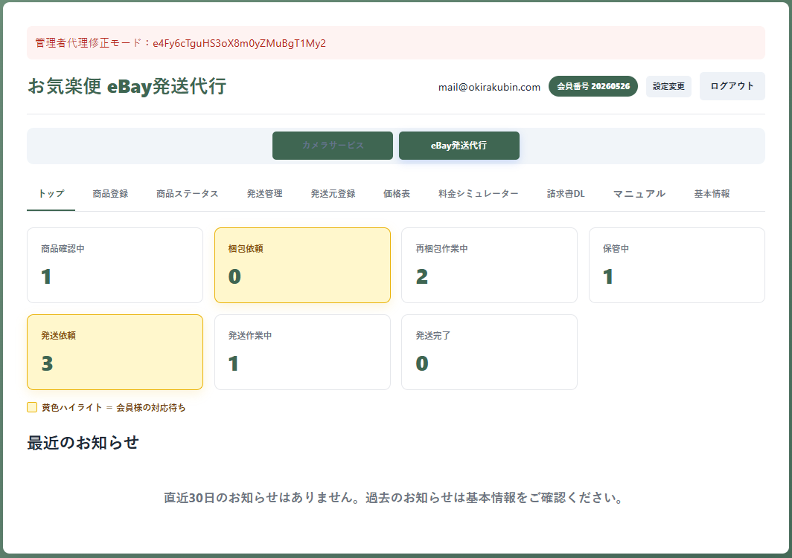
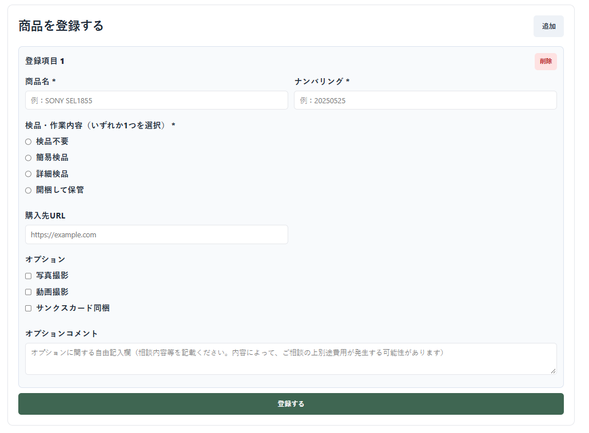
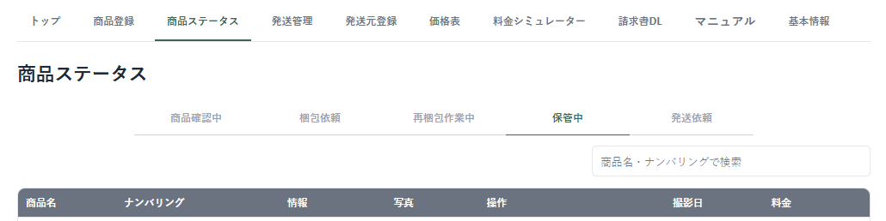
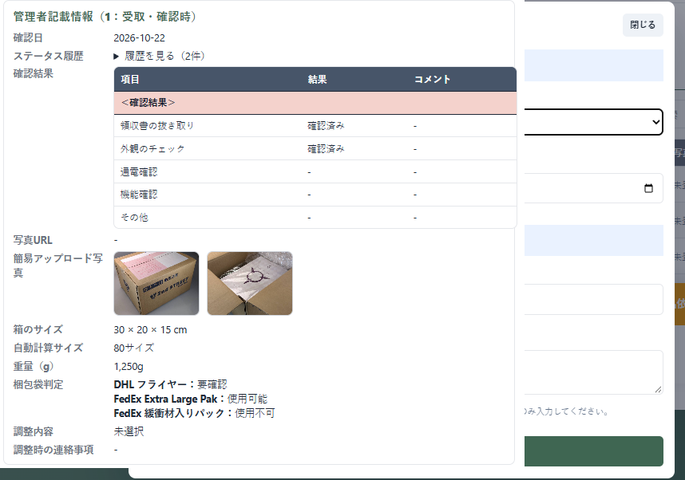
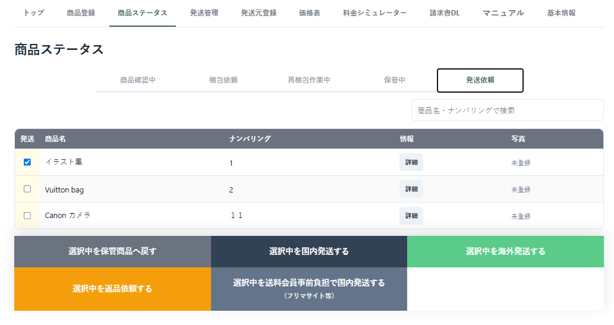
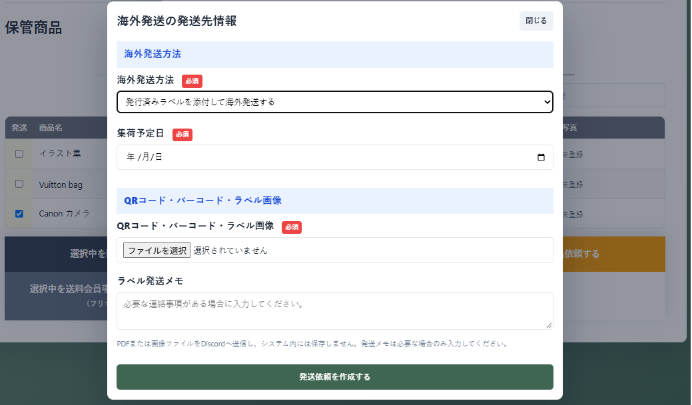
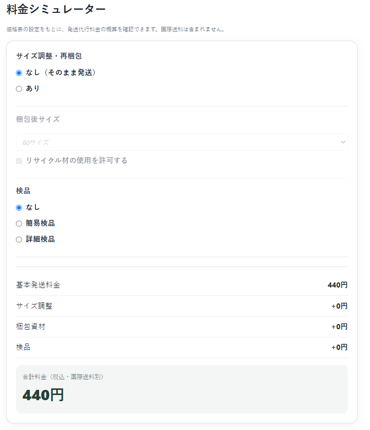
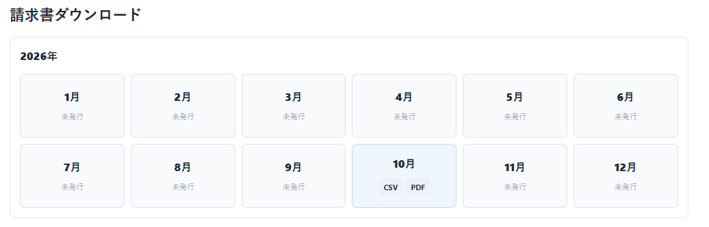
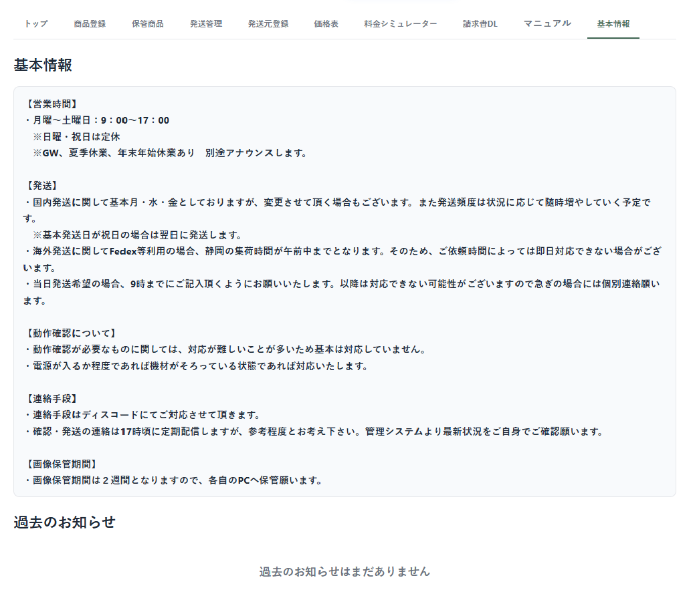

ログイン後、商品の件数と対応状況を確認できます。黄色の項目は会員様の操作待ちです。

- サイズ調整中：梱包方法などの選択が必要です。
- 保管中：発送または再梱包の判断ができます。
- 発送準備中：発送依頼を行える商品です。
商品登録から梱包調整、発送依頼、請求書確認までの操作をまとめています。
eBay発送代行 会員ページ用ログイン後、商品の件数と対応状況を確認できます。黄色の項目は会員様の操作待ちです。

「商品登録」から、倉庫へ送る商品を登録します。

オプションでは写真撮影などを指定できます。登録直後の「登録済み商品」は、管理者の確認前であれば編集・削除できます。
商品名・管理番号・作業依頼は必須です。商品ごとに管理番号が重複しないようご確認ください。

| ステータス | 内容 | 主な対応者 |
|---|---|---|
| 登録済み商品 | 登録後、倉庫での確認を待っている状態 | お気楽便 |
| サイズ調整中 | 計測結果を確認し、発送・再梱包・保管・返品を選択する状態 | 会員様 |
| 再梱包中 | 選択内容に基づいて再梱包している状態 | お気楽便 |
| 保管中 | 倉庫で保管している状態 | 会員様 |
| 発送準備中 | 発送依頼を行える状態 | 会員様 |
| 未発送 | 発送依頼後、発送完了を待っている状態 | お気楽便 |
| 発送済み | 発送が完了した状態 | ― |
サイズ調整中では、管理者が入力した受取時のサイズ・重量・確認結果・写真を確認し、次の対応を選択します。
「サイズ調整・再梱包」を選んだ場合は、梱包資材としてリサイクル材の使用可否なども指定します。
再梱包が必要な場合は「再梱包中」へ進み、作業後に再梱包後のサイズ・重量と梱包袋の使用可否が表示されます。

写真ボタンを押すと、登録された写真を大きく表示できます。写真URLが登録されている場合はリンクから確認できます。
発送準備中の商品を選択し、発送依頼を行います。配送サービスや発送日、必要なラベルファイルを登録してください。


依頼確定前に、選択商品・配送方法・ラベルファイルを必ず確認してください。
価格表では現在の税込料金を確認できます。料金シミュレーターは、価格表に登録されている金額を参照して概算します。

国際送料や「個別見積」と表示される作業はシミュレーターの合計に含まれません。
管理者が発行したeBay発送代行の請求書を月ごとに確認し、CSVまたはPDFでダウンロードできます。カメラ発送代行の請求書とは分かれています。

未発行の月はダウンロードできません。
トップにはeBay発送代行専用のお知らせが表示されます。カメラ発送代行のお知らせとは別管理です。
「基本情報」では営業時間、発送時の注意事項、連絡方法などを確認できます。
